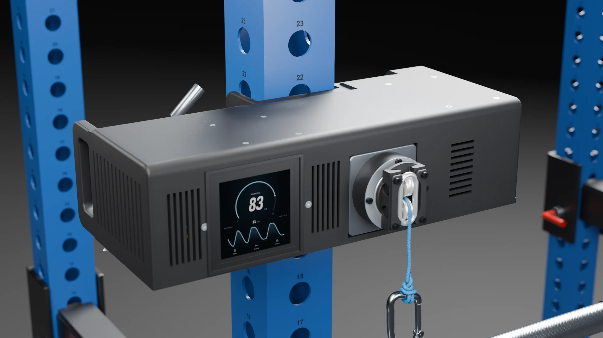
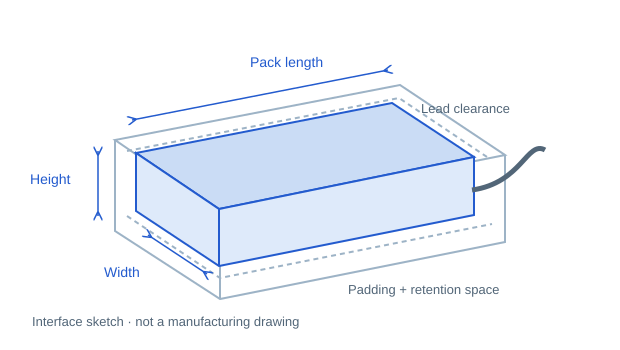
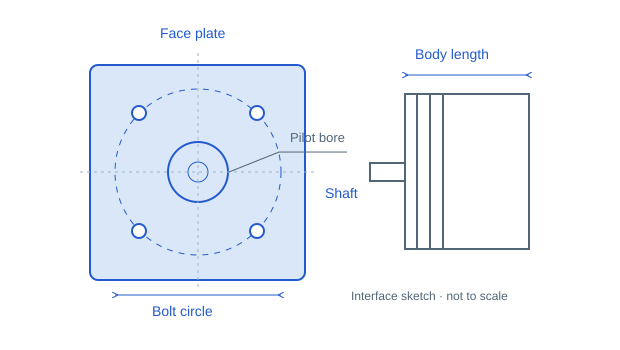

Raspberry Pi app
Touchscreen resistance, rep graph, training modes and session history.
Image & install guide pendingAn open hardware project
A compact, battery-powered gym that belongs to you. Print the parts, understand the mechanism, and make it your own.
Prototype design. Physical testing and control software are still in development.

Build it. Printed or CNC base.
Understand it. Open CAD and documentation.
Adapt it. Your motor. Your battery.
Your build starts here
Choose a manufacturing path. The CAD links and cost estimate follow your choice. Shared assembly steps apply to both.
See how it comes together
The product film follows the rope, drivetrain and controls. It is a design visualization; the assembly tutorial is still being made.
Product visualization · 30 seconds · Download film
Plan before you order
See quantities, supplier links and price assumptions. Edit a price to use your own quote, or tick parts you already have.
Includes purchase packs and fabrication allowances. Excludes tax, delivery, tools, labor and the rack. Estimates are not supplier quotes.
| Have it | Part / purchase unit | Qty | Unit price | Subtotal |
|---|
“Source price” means a price checked at the linked supplier. “Recorded price” is from the project’s earlier sourcing notes. All other prices are editable planning estimates. Your changes stay in this browser.
Make the parts
Keep the same design revision across your CAD, parts list and assembly guide. File names match the reference assembly.
Materials and orientations below follow the packaged print manifest. Shared printed parts are still used with the CNC base. Print fit coupons first; the published list is a release snapshot, not a claim that every pending revision is exported.
| File | Qty | Material | Size, mm | Orientation |
|---|
Use STEP for 3D geometry and DXF for profiles. Confirm material, thickness, tapped holes, countersinks and weld details with your fabricator. A profile alone is not a complete manufacturing drawing.
Make it yours
Start from a copy of the reference assembly. Adapt the mechanical envelope and mounting features together with the electrical configuration.

The reference uses two 5S packs in series (10S, 42 V fully charged). A larger pack is not automatically electrically compatible.

V43_METAL_motor_face_4mm, edit the mounting features or add a constrained face sketch for the new pilot and bolt circle.The drive is direct: cable force ≈ motor torque ÷ effective drum radius. A different Kv or larger motor does not by itself establish a safe resistance rating.
FreeCAD files currently contain editable feature histories. Fully sketch-parametric parts are planned. STEP files are solids; add sketches and features in your CAD tool to modify them.
Open the full modification reference ↗The control layer
These are planned components, not available downloads. The touchscreen in the film is a visual preview.
Touchscreen resistance, rep graph, training modes and session history.
Image & install guide pendingReal-time machine control, position limits and communication with the motor driver.
Firmware & configuration pendingA fuller browser interface for settings, workouts and training data.
Companion app pendingThe ODrive Pro is a third-party controller with its own firmware and terms. The project’s hardware and future application code do not make that firmware open source.
Build in the open
Share a build report, improve an instruction, or contribute a tested motor mount. Include the design revision, changed files and what you measured.
Checking the public repository link…
Hardware: CERN-OHL-S-2.0
Documentation: CC BY-SA 4.0
Source scripts: GPL-3.0